Cross-Validation Results: Automatic Report and Interpretation
Metrics by Fold
| Fold |
R2 |
MSE |
RMSE |
MAE |
| 1 |
-0.881359 |
1653.234359 |
40.659985 |
33.708383 |
| 2 |
0.459662 |
267.021575 |
16.340795 |
13.448033 |
| 3 |
-3.158463 |
1008.365971 |
31.754779 |
28.078798 |
| 4 |
-0.681048 |
384.669784 |
19.613000 |
16.978090 |
| 5 |
-0.193499 |
1020.731211 |
31.948884 |
28.540650 |
Feature Importance (mean ± std)
| feature |
mean_importance |
std_importance |
| TR |
0.160274 |
0.048067 |
| OR |
0.141693 |
0.026890 |
| TL |
0.132531 |
0.044644 |
| FL |
0.108413 |
0.034494 |
| PR |
0.105855 |
0.061852 |
| CR |
0.089838 |
0.043045 |
| CL |
0.078238 |
0.008872 |
| PL |
0.075416 |
0.021432 |
| OL |
0.071028 |
0.028383 |
| FR |
0.036715 |
0.009234 |
Main Plots
feature_importances_mean_std.png
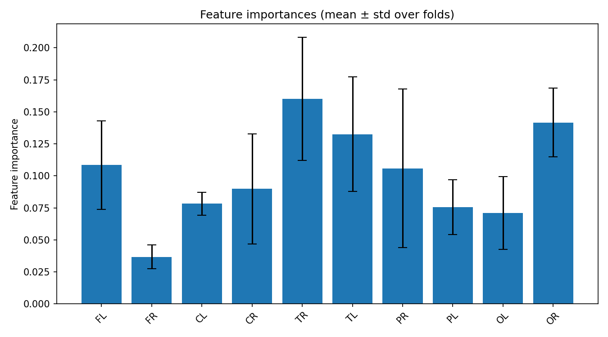
feature_importances_correlation_heatmap.png
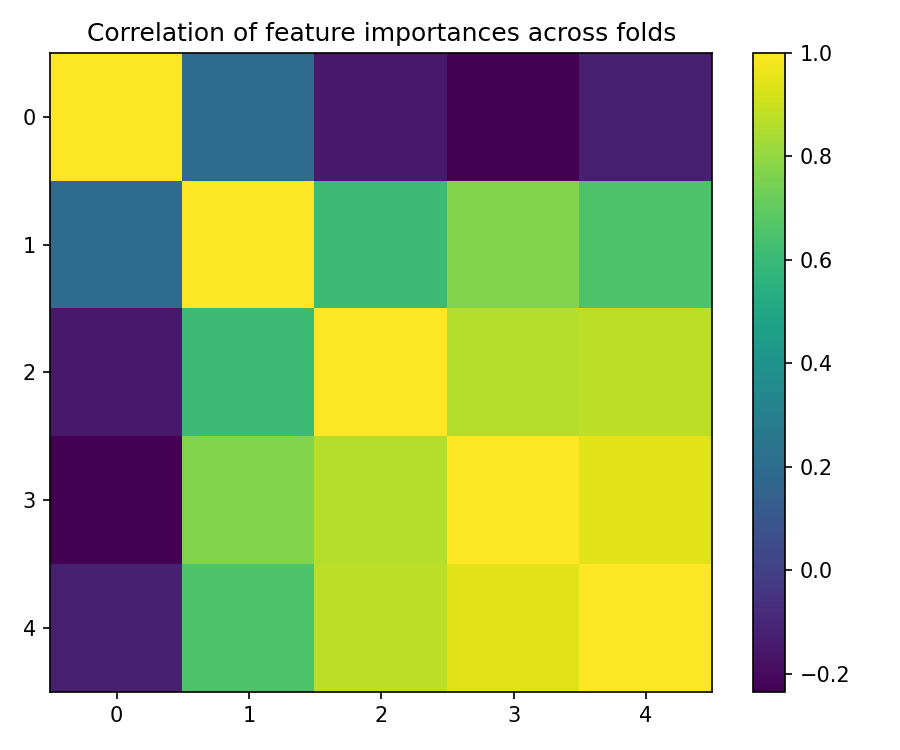
best_fold_2_feature_importances.png
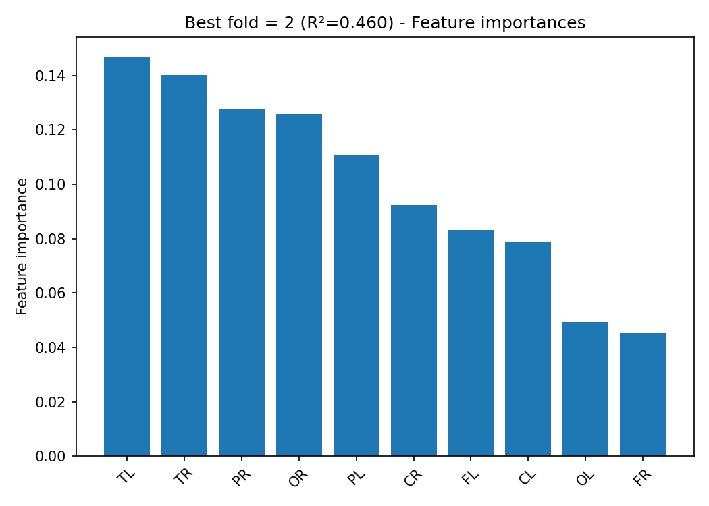
True vs Predicted Scatter Plots (by fold)
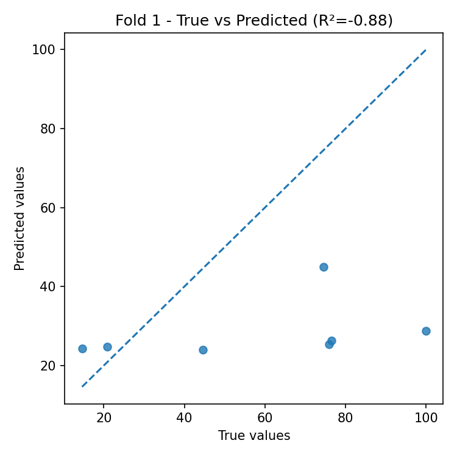
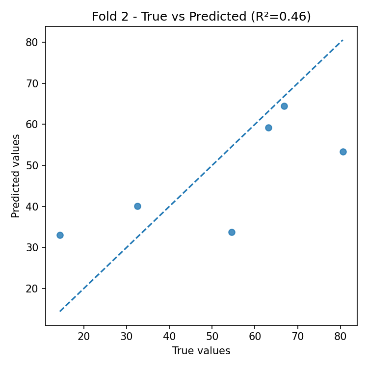
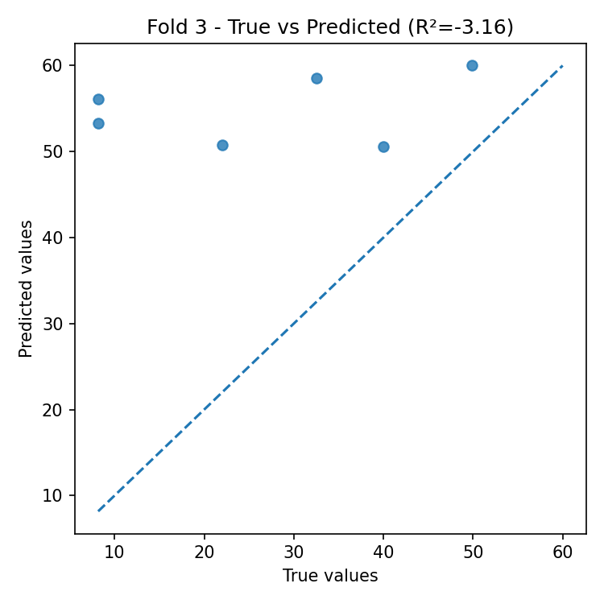
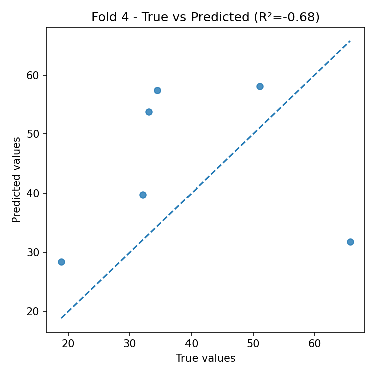
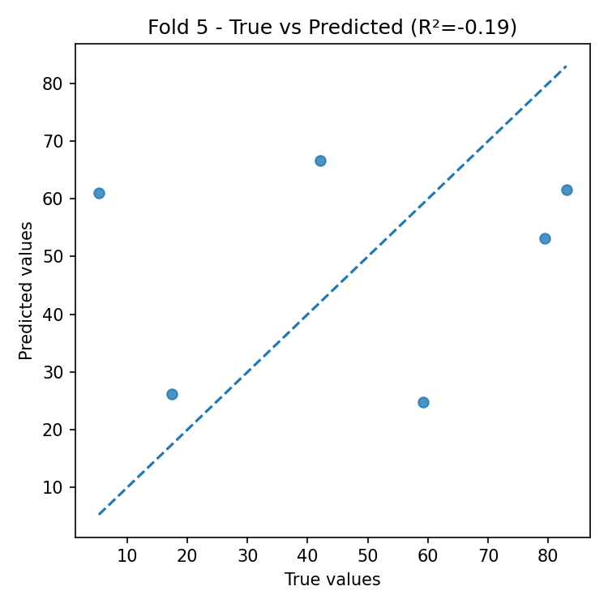
Residual Plots (by fold)
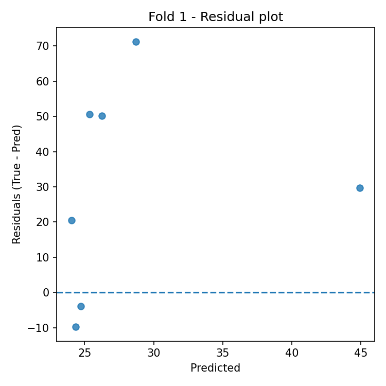
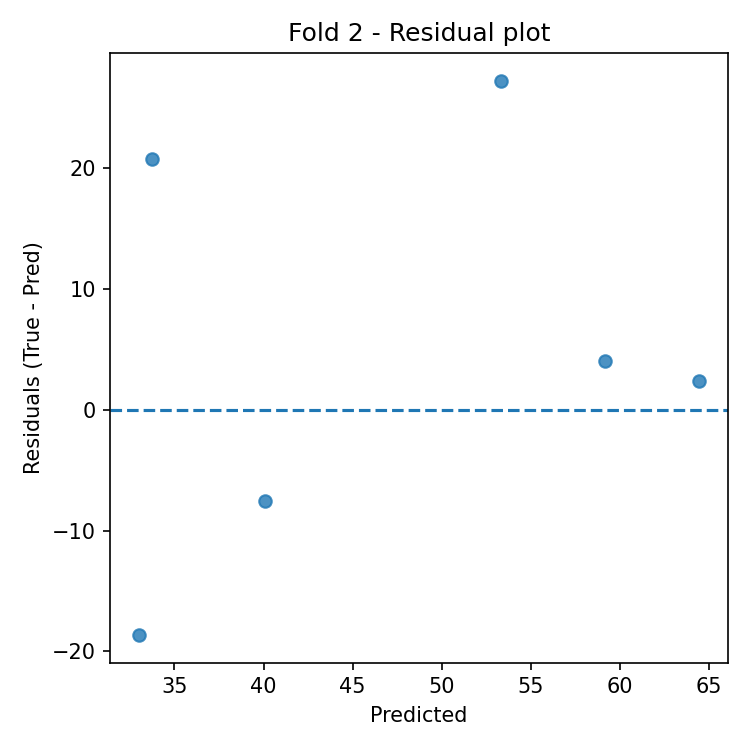
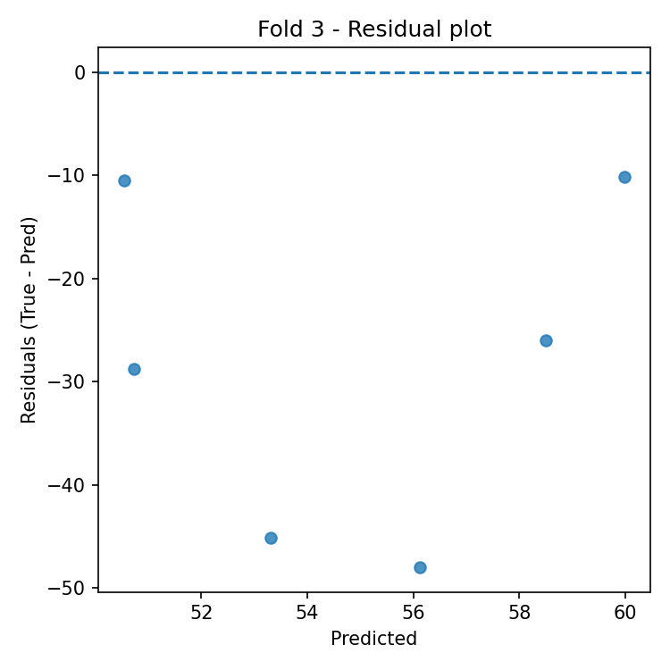
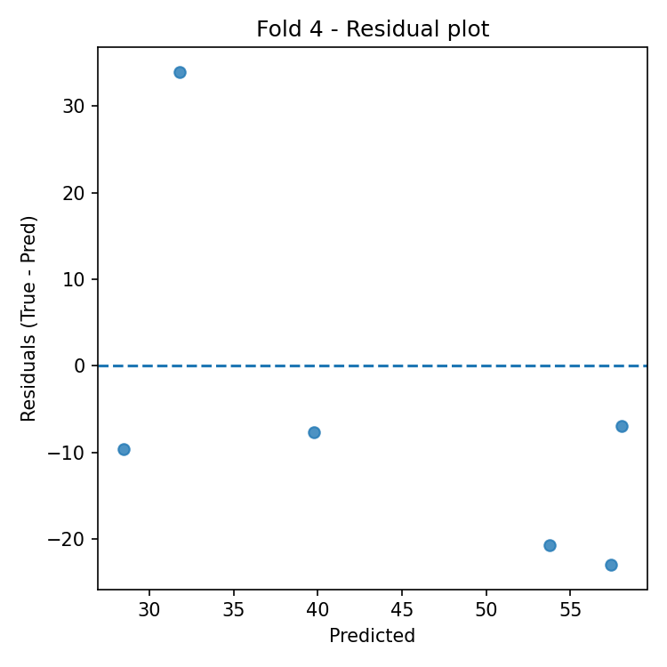
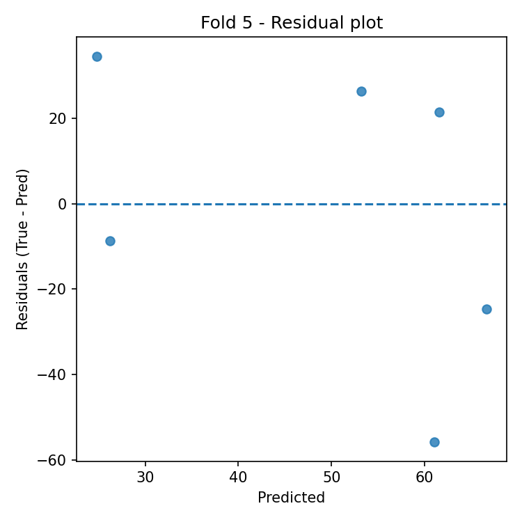
Automatic Interpretation
Overall Performance
- Mean R² across folds: -0.891 (± 1.369).
- Average error: RMSE = 28.063, MAE = 24.151 (same unit as target variable).
Model Stability
- R² variability across folds is high (std = 1.369).
- Average feature importance stability across folds: 0.033 (lower = more stable).
Most Important Features (average across all folds)
- Top-3: TR (0.160), OR (0.142), TL (0.133).
Best Fold
- Best fold: 2 with R² = 0.460.
- In the best fold, the most important features are: TL (0.147), TR (0.140), PR (0.128).
Residual Analysis (best fold)
- Residuals–predictions correlation: 0.252 (0 ≈ absence of linear bias).
- |Residuals|–predictions correlation: -0.510 (positive values indicate possible heteroscedasticity).
- Outliers (|res| > 3·std): 0.